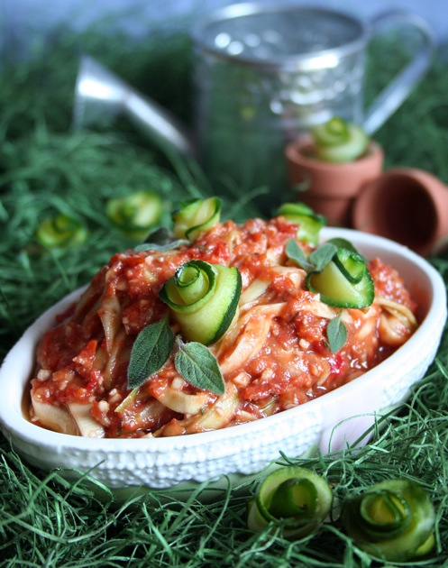

Cherry Tomato Marinara Sauce

~ raw, vegan, gluten-free, nut-free ~
Tonight we had yet another wonderful raw dinner that we shared with Jason and Moriah. Our dinner was to celebrate two things…Moriah just graduated from college and also to celebrate our wedding anniversary together. Their anniversary is in June, and ours is July 1st.
I have to admit that these dinners just keep getting better and better! I prepared for us a lovely pasta dish made from zucchini for the noodles and a cherry tomato marinara sauce that was crazy good! It sent my taste buds on a pleasurable journey that didn’t want to come back.
I also prepared massaged spinach on the side along with onion bread that I pulled out of the dehydrator just minutes before they arrived.
The funny part was that about halfway through the dinner, Jason informed us that before sitting down for dinner with us, he hated spinach, he hated zucchini, and he hated avocado. All of which I presented right before him for dinner! BUT!!!! He said that he couldn’t believe how he loved the dishes I prepared. He even had seconds!
Oh, I also made a Macadamia Ricotta “cheese” to use as a spread on the onion bread. It was all so exquisite! For dessert, I topped it off with my famous raw apple pie! Yummy! Jason and Moriah took all the leftover food home with them.
Ingredients:
Yields 2 1/4 cups
- 2 1/2 cups cherry tomatoes
- 1/2 cup sun-dried tomatoes, soaked
- 2 Tbsp cold-pressed olive oil
- 1 clove garlic
- 2 tsp dried oregano
- 2 tsp dried basil
- 2 tsp agave syrup or equivalent
- 1 tsp Himalayan pink salt
- 2 to 3 large zucchini – I used my spiralizer to make the pasta noodles out of this.
Preparation:
- In the food processor combine the; cherry tomatoes, sun-dried tomatoes, olive oil, garlic clove, oregano, basil, sweetener, and salt. Process until either chunky or smooth.
- If the sun-dried tomatoes are tough and dry, soak them in some warm water to plump them back up. Be sure to drain and hand squeeze the excess water from them before adding to the food processor.
- You can use avocado oil in place of olive oil.
- You can omit the sweetener if the tomatoes are sweet enough or if you don’t want a sweet marinara sauce.
- Spiralize the zucchini to create pasta noodles. Toss with marina sauce and enjoy!
- If you have the time, heavily salt the zucchini noodles and let them sit for 30-60 minutes. This technique will pull the water out of them, leaving you with a softer noodle. Be sure to rinse the salt off and blot dry before adding the sauce.
- Store leftover sauce in the fridge for 3-4 days.